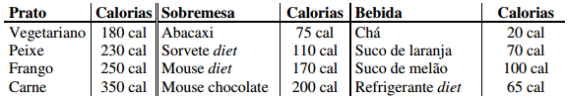

Questão:
Criar um programa em Javascript, que informe a quantidade total de calorias de uma refeição a partir do usuário que deverá informar o prato, a sobremesa e a bebida (veja a tabela a seguir).

Programa: